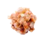

Mineral Grimoire
 Septarian
Septarian
Septarian is a fossilized blend of aragonite, limestone, and calcite that formed roughly 50 million years ago when organic matter converged with molten rock. In Latin, "septaria" means "cracks," reflecting the distinctive fissure patterns that define this ancient stone.
Appearance
Septarian displays cracked, mud-filled fissures and nodules lined with gritty stone, often found in egg-shaped formations that confine and shape energy physically. It merges the visible qualities of its three component minerals, with grey concretions, golden calcite deposits, and brown aragonite patterns creating a striking mosaic. Among the most famous deposits are the Moeraki Boulders on the east coast of New Zealand's South Island, nearly perfect spheres reaching over 7 feet in diameter, estimated to have formed over 5.5 million years during the Cretaceous period. Also known as Dragon's Stone, as the ancients believed dragons emerged from septarian eggs along the natural fault lines before the stones were mined by human hands.
Colors
Brown, yellow-gold, grey, cream, dark brown banding
Origin
Madagascar, New Zealand, United States (Utah), Australia, Canada, Spain, Britain
Magickal Properties
Septarian carries the weight of ancient wisdom, past-life recall, and transformation within its cracked and layered form. The grey concretions connect to devic energy, encouraging stewardship of the earth. It focuses healing vibrations within drumming and chanting circles and enhances the cohesiveness of any spiritual group. Useful for Neuro Linguistic Programming (NLP), it assists in repatterning and reprogramming deep behavioral patterns, directing the practitioner to the most appropriate tools for the work at hand. It harmonizes the emotions and intellect with the higher mind to bring illumination.
For beginners, Septarian serves as a reminder that every crack and challenge has shaped who the keeper is today. It encourages continual spiritual and life-path evolution, holds potent Earth wisdom, and clears and transmutes negative energies. It brings peace and joy during challenging times alongside organization and acceptance. It supports the incubation of ideas and assists in manifesting them with patience, tolerance, and endurance. It also creates a shield of invisibility around and through the auric field, allowing the keeper to pass through situations unnoticed. Septarian eggs make perfect hand comforters during times of stress.
Advanced practitioners work with Septarian to facilitate lucid dreams and waking visions of past-life experiences, especially those holding messages relevant to present-day situations. It deepens connection to the wisdom contained within the earth and the nurturing energy it offers, providing support during times of radical or unsettling change. Meditating with this stone while invoking ancient energies brings a profound sense of being loved, understood, and protected. Healers use Septarian in meditation for insight into the root cause of dis-ease, as it focuses the body's healing ability and facilitates flexibility of physical movement. If a specimen has a pointed end, it serves as a useful reflexology or acupressure tool.
Chakra Work
Septarian activates the Root Chakra, grounding the keeper in feelings of stability and safety during periods of evolution. Placed on this energy center or held in meditation, it opens communication with elders and spirit guides, honoring the past and connecting with ancestors. The honey calcite deposits within Septarian also resonate with the Sacral Chakra, helping the keeper feel connected and in service to their direct bloodline and lineage. Physically, it detects and rebalances blockages throughout the body, supporting the intestines, kidneys, blood, and heart.
Meditation
Meditating with Septarian attunes the keeper to ancient wisdom, ancestral magick, and deep connection with spirit guardians. Hold a tumbled piece or egg-shaped nodule at the Root Chakra to invoke these energies. The stone is especially potent for past-life recall work, facilitating lucid visions that illuminate how previous incarnations relate to current circumstances. It is also beneficial for seasonal affective disorder, bringing warmth and illumination during darker periods.
Correspondences
Ancient Wisdom, Past Lives, Transformation, Grounding, Stability, Safety, Ancestors, Protection, Peace, Joy, Acceptance, Evolution, Invisibility, Root Chakra, Sacral Chakra, Aura, Organization, Wisdom
Partners Well With
 Barite, Clear Quartz,
Barite, Clear Quartz,  Fuchsite, Petrified Wood, Tiger Iron,
Fuchsite, Petrified Wood, Tiger Iron,  Unakite
Unakite
Care
Septarian sits at Mohs 3 to 4 due to its calcite content, making it a soft and somewhat fragile stone. It is not water safe; the calcite component is water-soluble, so avoid soaking or prolonged water exposure. Cleanse with smoke, sound, or by placing on a selenite plate. Sun exposure is generally safe for brief periods. Handle with care and store separately from harder stones to prevent scratching. Best used as a meditation piece, display specimen, or hand comforter rather than jewelry.
Magickal Message
"Meditate with me to attune yourself to ancient wisdom, protect yourself with ancestral magick, and connect deeply with your guardians."